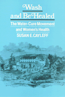

An exploration of the relationship between hydrotherapy and the women who took the cure
An exploration of the relationship between hydrotherapy and the women who took the cure


 An exploration of the relationship between hydrotherapy and the women who took the cure
An exploration of the relationship between hydrotherapy and the women who took the cure

|  |
Wash and Be HealedThe Water-Cure Movement and Women's HealthSusan E. Cayleffpaper EAN: 978-0-87722-859-2 (ISBN: 0-87722-859-0) |
"[Cayleff] is eloquent and convincing in her demonstration that water cure presented an alternative to the prevailing view of the inherent weakness of female physiology.... [This] richly textured book is a welcome contribution to the growing body of literature on gender and medical practice and should be read by all students of nineteenth-century American medicine."
—Bulletin of the History of Medicine
In a century characterized by dramatic health-care remedies—bloodletting, purging, and leeching, for example—hydropathy was one of the most celebrated alternative forms of medical care. Unlike these other cures, however, hydropathy, which entailed various applications of cold water, also staunchly advocated the reformation of such personal habits as diet, exercise, dress, and way of life. Susan E. Cayleff explores the relationship between this fascinating sect of nineteenth-century medicine and the women who took the cure.
Wash and Be Healed investigates the theories, practices, medical and social philosophies, institutions, and the most prominent proponents of the water-cure movement and studies them in relation to the diverse reform networks of the nineteenth century. Documenting the popularity and importance of hydropathy among female activists, Cayleff argues that the water-cure movement was overpowered by allopathic (or orthodox) medicine which viewed hydropathy as a crackpot therapeutic largely because of its close association with nineteenth-century social activism. The book gives us an alternative view of social and sexual relationships which should contribute to the growing awareness among scholars that the history of health and healing must be more than the history of allopathic medicine.
Excerpt available at www.temple.edu/tempress
"Cayleff has written a lively, thought-provoking account of the water-cure movement and its special meaning for mid-nineteenth-century women.... [She] has provided a valuable new perspective on a fascinating epoch in American health reform."
—American Historical Review
"A major contribution to our understanding of nineteenth-century reform impulses.... Cayleff is so deft at describing the appeal of the water-cure to overwrought Victorian women and men, so able at letting her subjects speak to the reader, that the hydropathic propaganda is not only comprehensible, but persuasive.... An excellent addition not only to the history of American medicine, but to nineteenth-century social and intellectual history in general."
—Medical Humanities Review
"Clearly written, well-researched, and argued, Wash and Be Healed is an accessible and valuable book to all interested in nineteenth-century social history or the history of medicine."
—Journal of the Early Republic
Acknowledgments
Introduction: The Rise of Medical Sectarianism
1. Wash and Be Healed: The Hydropathic Alternative
2. Hydropathy, Woman' sPhysiology, and Her Role
3. Ideology in Practice: Water-Cure Establishments
4. Hydropathy and the Reform Movements
5. Women at the Cures: Rest for the Weary Activist
Conclusion: Demise and Legacy of the Water-Cure Movement
Notes
An Essay on Sources
Index
 | Susan E. Cayleff is Associate Professor in the Department of Women’s Studies at San Diego State University. |
American Studies
Women's Studies
Health and Health Policy
Health, Society, and Policy, edited by Sheryl Ruzek and Irving Kenneth Zola.
No longer active.
Health, Society and Policy, edited by Sheryl Ruzek and Irving Kenneth Zola, takes a critical stance with regard to health policy and medical practice, ranging broadly in subject matter. Backlist titles include books on the legal and professional status of midwifery, the experience and regulation of kidney transplants, the evolution of federal law on architectural access, and a political/ethical argument for making the community responsible for universal access to health care.
© 2015 Temple University. All Rights Reserved. This page: http://www.temple.edu/tempress/titles/416_reg.html.